Hướng dẫn cách hạch toán ghi sổ nghiệp vụ mua công cụ dụng cụ về nhập kho sau đó xuất kho ra sử dụn trên phần mềm Misa
Khi phát sinh nghiệp vụ xuất Công Cụ Dụng Cụ cho hoạt động sản xuất kinh doanh, sẽ phát sinh các hoạt động sau:
- Bộ phận/nhân viên có nhu cầu làm đề nghị mua CCDC gửi trưởng bộ phận, giám đốc phê duyệt đề nghị mua CCDC.
- Sau khi nhận được đề nghị mua CCDC, Nhân viên mua hàng tìm kiếm nhà cung cấp, báo giá và đề xuất lựa chọn nhà cung cấp, trình giám đốc phê duyệt.
- Nhân viên mua hàng lập đơn mua hàng, trình trưởng bộ phận và giám đốc phê duyệt và chuyển đơn mua hàng cho nhà cung cấp để đặt mua hàng.
- Nhà cung cấp thực hiện giao hàng, khi CCDC về đến kho, nhân viên mua hàng giao cho kế toán hóa đơn chứng từ và đề nghị viết Phiếu nhập kho.
- Kế toán kho lập Phiếu nhập kho, sau đó chuyển Kế toán trưởng ký duyệt.
- Căn cứ vào phiếu nhập kho, thủ kho kiểm, nhận hàng và ký vào phiếu nhập kho.
- Thủ kho ghi sổ kho, lưu 1 liên phiếu nhập kho và chuyển 1 liên cho kế toán. Kế toán kho căn cứ vào phiếu nhập kho để ghi sổ kế toán kho.
- Kế toán mua hàng hạch toán thuế và kê khai hóa đơn đầu vào.
- Căn cứ vào yêu cầu sử dụng CCDC tại các bộ phận được phê duyệt, kế toán kiểm tra nếu CCDC trong kho còn đủ để xuất sẽ viết phiếu xuất kho.
- Kế toán trưởng và Giám đốc ký duyệt phiếu xuất kho.
- Căn cứ vào phiếu xuất kho đã duyệt, thủ kho thực hiện xuất kho, ký vào phiếu xuất kho và ghi sổ kho.
- Kế toán kho nhận phiếu xuất kho và ghi sổ kế toán.
- Hành chính nhận CCDC, lập biên bản giao nhận các phòng ban, bộ phận trong đơn vị.
- Sau khi bàn giao xong CCDC, Kế toán trưởng, Giám đốc, người giao, người nhận sẽ ký vào biên bản giao nhận CCDC.
- Kế toán CCDC nhận lại biên bản giao nhận CCDC để ghi sổ CCDC.
- Trường hợp CCDC xuất ra được phân bổ dần vào chi phí sản xuất kinh doanh thì cuối mỗi tháng kế toán tiến hành phân bổ giá trị CCDC vào chi phí.
1. Cách định khoản hạch toán mua CCDC về nhập kho sau đó xuất kho ra sử dụng
a. Khi mua CCDC về nhập kho
- Nợ TK 153 - Giá mua chưa có thuế GTGT
- Nợ TK 133 - Thuế GTGT được khấu trừ (nếu có)
- Có TK 111, 112, 331 Tổng giá thanh toán
b. Khi xuất kho CCDC ra sử dụng, cho thuê
- Trường hợp CCDC phân bổ 1 lần
- Nợ TK 154 - Bộ phận sản xuất (theo Thông Tư 133)
- Nợ TK 623 - Chi phí máy thi công
- Nợ TK 627 - Chi phí sản xuất chung
- Nợ TK 641 - Chi phí bán hàng
- Nợ TK 642 - Chi phí quản lý doanh nghiệp
- Có TK 152, 153, 155, 156 - 100% giá trị CCDC (Xuất CCDC, thành phẩm hoặc hàng hóa trong kho ra sử dụng như CCDC)
- Trường hợp CCDC phân bổ nhiều lần
- Nợ TK 242 - Chi phí trả trước
- Có TK 152, 153, 155, 156 - 100% giá trị CCDC (Xuất CCDC, thành phẩm hoặc hàng hóa trong kho ra sử dụng như CCDC)
c. Cuối kỳ, thực hiện phân bổ CCDC vào chi phí (trường hợp CCDC phân bổ nhiều lần)
- Nợ TK 154, 623, 627, 641, 642 - Giá trị CCDC phân bổ trong kỳ
- Có TK 242
2. Các bước hạch toán ghi sổ nghiệp vụ mua công cụ dụng cụ về nhập kho sau đó xuất kho ra sử dụng trên phần mềm Misa
Bước 1: Hạch toán nghiệp vụ mua CCDC về nhập kho
- Vào phân hệ "Mua hàng" => chọn "Chứng từ mua hàng hóa".
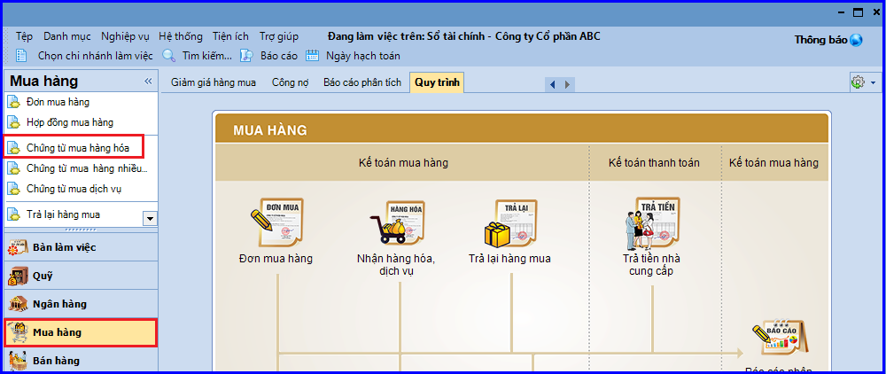
- Khai báo các thông tin chi tiết của chứng từ mua hàng:
+ Chọn loại chứng từ mua hàng là Mua hàng trong nước nhập kho hoặc Mua hàng nhập khẩu nhập kho.
+ Khai báo thông tin CCDC mua về nhập kho.
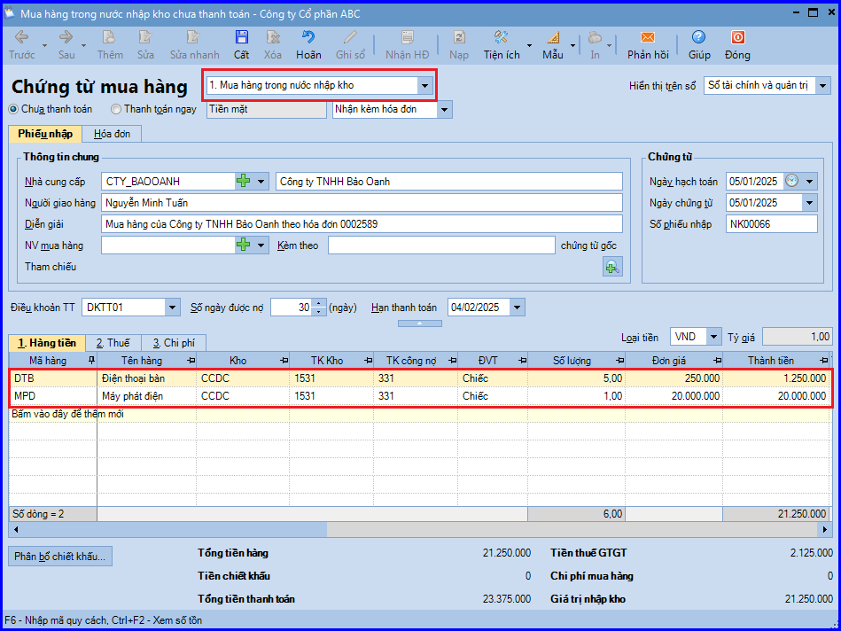
- Các bạn ấn "Cất".
Bước 2: Hạch toán nghiệp vụ xuất kho CCDC
- Vào phân hệ "Kho" => chọn "Xuất kho" (hoặc vào tab "Nhập, xuất kho" => ấn "Thêm").
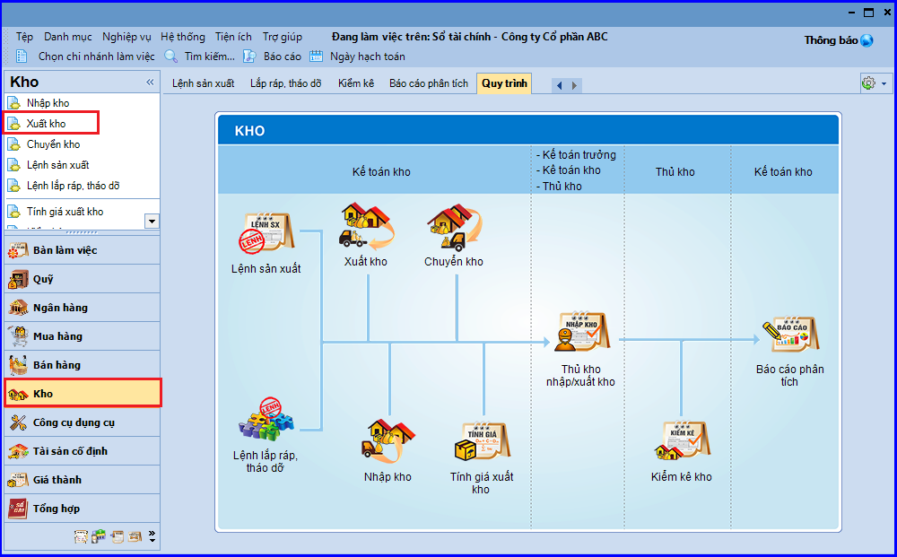
- Chọn loại phiếu xuất kho là "Khác" (Xuất sử dụng, góp vốn …).
- Khai báo chứng từ xuất kho CCDC để sử dụng.
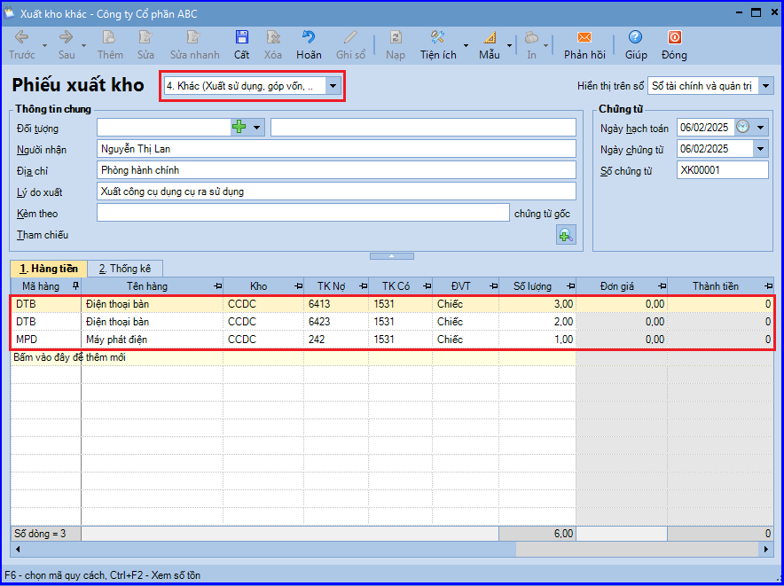
- Các bạn ấn "Cất".
CHÚ Ý:
- Trường hợp thủ kho có tham gia sử dụng phần mềm. sau khi phiếu xuất kho được lập, phần mềm sẽ tự động sinh phiếu xuất kho trên tab "Đề nghị nhập, xuất kho của Thủ kho". Thủ kho sẽ thực hiện việc ghi sổ phiếu xuất kho vào sổ kho.
Bước 3: Ghi tăng CCDC vào sổ theo dõi CCDC
Kế toán thực hiện ghi tăng theo một trong hai cách sau:
Ghi tăng từng CCDC xuất kho
- Vào phân hệ "Công cụ dụng cụ" => chọn "Ghi tăng" (hoặc vào tab "Ghi tăng" => ấn "Thêm").
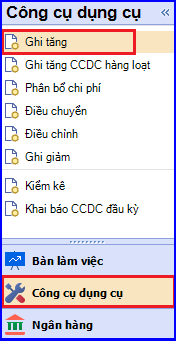
- Có thể ghi tăng nhanh CCDC bằng cách lấy các thông tin CCDC đã khai báo trên "Chứng từ xuất kho/mua hàng"; "Chứng từ ghi giảm TSCĐ" hoặc trên "Sổ khác" sổ đang làm việc (nếu có)
- Hoặc, có thể tự khai báo các thông tin về CCDC được ghi tăng.
- Khai báo đơn vị sử dụng CCDC và số lượng CCDC sử dụng ở từng đơn vị.
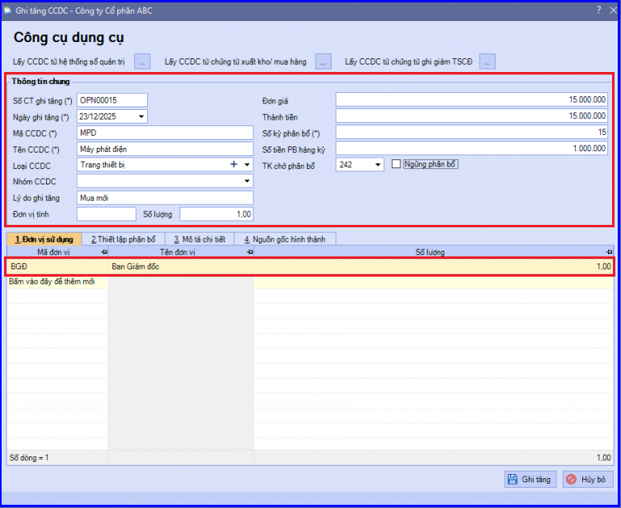
- Thiết lập thông tin phân bổ CCDC như: đối tượng phân bổ, tỷ lệ phân bổ, tài khoản chi phí => Phần mềm đã tự động thiết lập sẵn dựa vào thông tin đã khai báo tại tab "Đơn vị sử dụng", tuy nhiên Kế toán vẫn có thể thay đổi lại theo đúng với thực tế tại đơn vị.
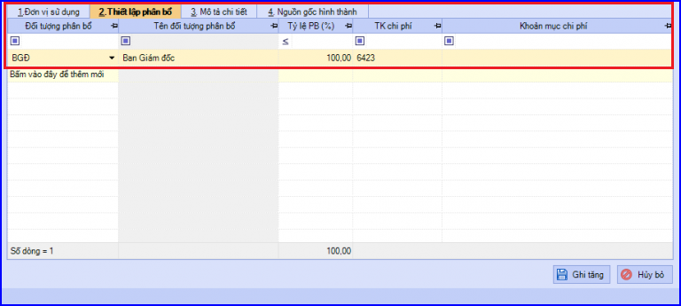
- Các bạn ấn "Ghi tăng".
CHÚ Ý:
- Trường hợp muốn khai báo các bộ phận cấu thành nên CCDC, Kế toán có thể khai báo thông tin trên tab "Mô tả chi tiết".
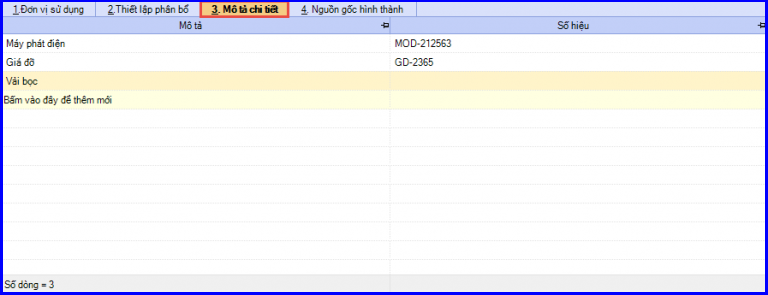
- Trường hợp muốn chọn các chứng từ liên quan đến việc ghi tăng CCDC, Kế toán có thể khai báo thông tin trên tab "Nguồn gốc hình thành".
CHÚ Ý: Phần mềm chỉ lấy lên các chứng từ có số tiền > 0
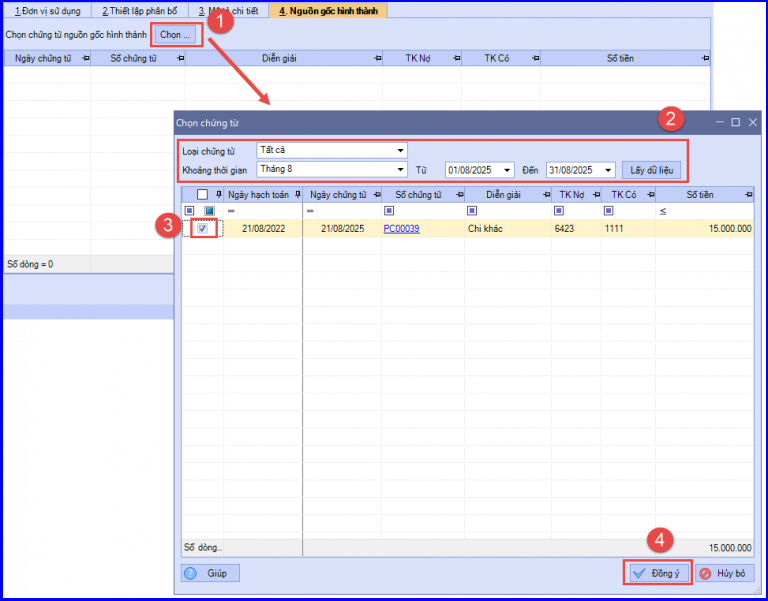
Ghi tăng tất cả các CCDC được xuất kho
- Vào phân hệ "Công cụ dụng cụ" => chọn "Ghi tăng CCDC hàng loạt".
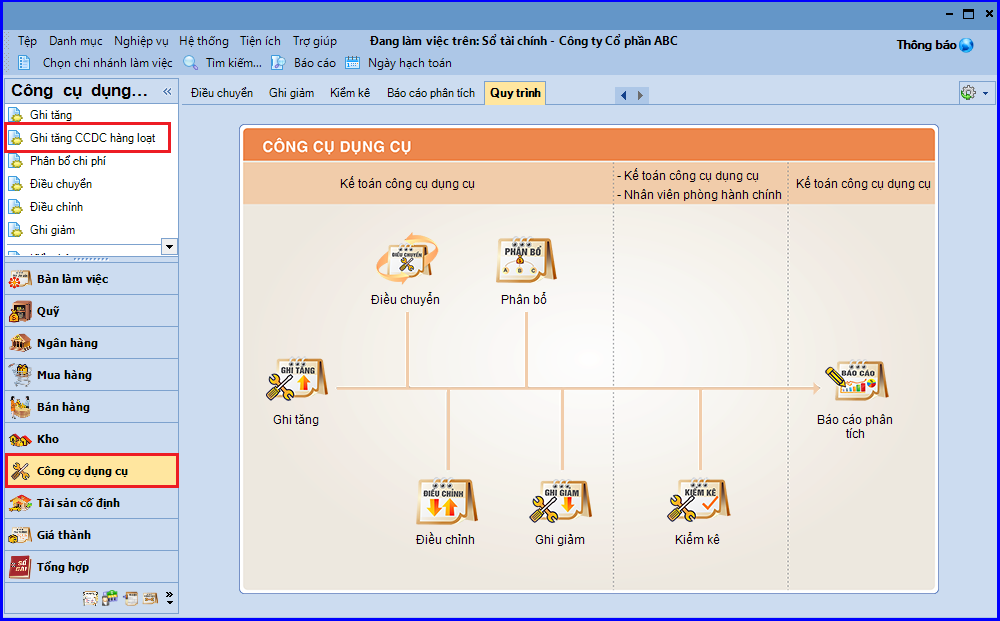
- Các bạn ấn "Lấy CCDC từ chứng từ xuất kho/mua hàng" => hiển thị giao diện "Chọn chứng từ xuất kho/mua hàng".
- Tại mục "Loại" => chọn "Xuất kho khác".
- Chọn khoảng thời gian tìm kiếm chứng từ xuất kho CCDC.
- Các bạn ấn "Lấy dữ liệu". Trên giao diện sẽ hiển thị các chứng từ xuất kho thỏa mãn điều kiện đã thiết lập và có thành tiền > 0
- Tích chọn các CCDC muốn ghi tăng, ấn "Chọn". Phần mềm sẽ tự động lấy thông tin các CCDC đã khai báo trên chứng từ xuất kho được chọn vào chứng từ ghi tăng CCDC hàng loạt.
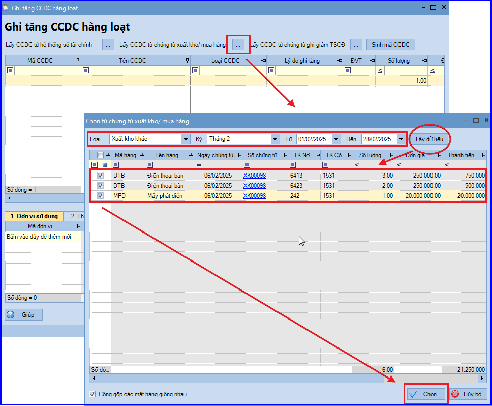
- Kiểm tra và khai báo bổ sung, điều chỉnh các thông tin CCDC (nếu cần).
- Khai báo đơn vị sử dụng CCDC và số lượng CCDC sử dụng ở từng đơn vị.
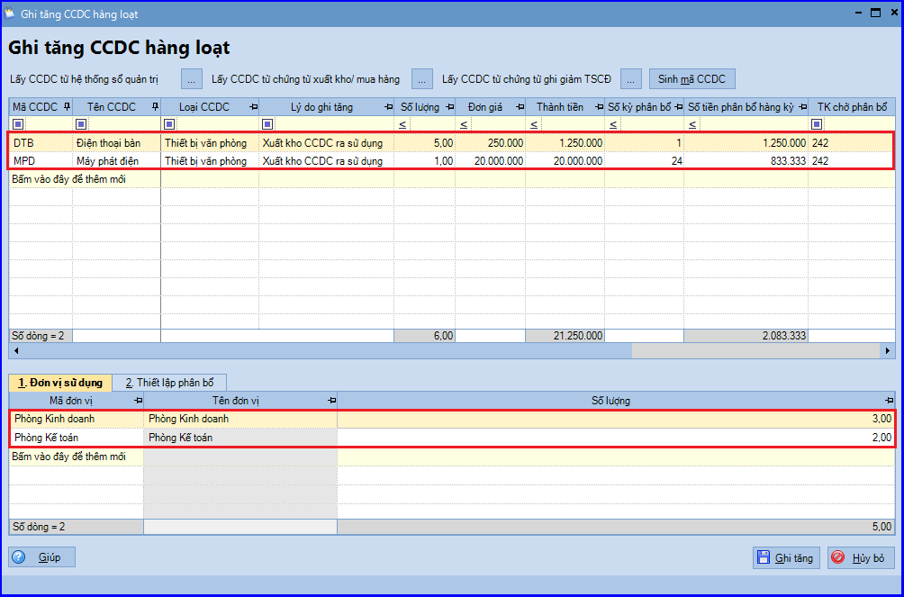
CHÚ Ý: Với CCDC có Số kỳ phân bổ là 1 thì phần mềm sẽ không lấy lên các CCDC này khi thực hiện phân bổ CCDC.
- Thiết lập thông tin phân bổ CCDC như: đối tượng phân bổ, tỷ lệ phân bổ, tài khoản chi phí => Phần mềm đã tự động thiết lập sẵn dựa vào thông tin đã khai báo tại tab "Đơn vị sử dụng", tuy nhiên Kế toán vẫn có thể thay đổi lại theo đúng với thực tế tại đơn vị.
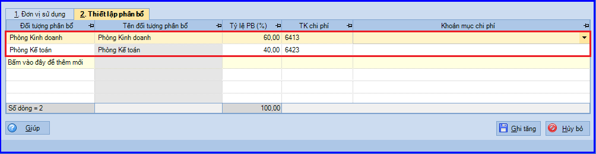
- Các bạn ấn "Ghi tăng".
CHÚ Ý: Trường hợp ghi tăng cùng lúc nhiều CCDC và muốn quản lý đồng nhất mã cho các CCDC, hay số chứng từ ghi tăng CCDC theo quy luật đánh số tăng dần thực hiện như sau:
+ Để con trỏ chuột vào "Mã CCDC làm chuẩn".
+ Các bạn ấn "Sinh mã CCDC" hoặc click chuột phải chọn "Sinh mã CCDC" cho các dòng phía dưới, phần mềm sẽ tự động đánh lại mã CCDC cho các dòng phía dưới theo thứ tự tăng dần dựa trên mã CCDC làm chuẩn.
+ Để con trỏ chuột vào "Số chứng từ ghi tăng làm chuẩn".
+ Các bạn ấn chuột phải chọn "Sinh số CT" ghi tăng cho các dòng phía dưới, phần mềm sẽ tự động đánh lại số chứng từ ghi tăng cho các dòng phía dưới theo thứ tự tăng dần dựa trên số chứng từ ghi tăng làm chuẩn.
3. LƯU Ý
- Định kỳ, Kế toán sẽ căn cứ vào số kỳ phân bổ đã thiết lập khi ghi tăng CCDC, để thực hiện phân bổ giá trị của CCDC vào chi phí của đơn vị.
- Đối với dữ liệu hạch toán đa chi nhánh và sử dụng cả hai hệ thống sổ (tài chính và quản trị), CCDC được ghi tăng khi đang làm việc tại chi nhánh nào, sổ nào sẽ chỉ được lưu trên chi nhánh đó và sổ đó. Trường hợp muốn lấy thông tin CCDC đã khai báo từ sổ này sang sổ khác, Kế toán có thể sử dụng chức năng:
+ Lấy từng CCDC từ hệ thống sổ quản trị (hoặc ngược lại)
+ Lấy hàng loạt CCDC từ hệ thống sổ quản trị (hoặc ngược lại)
- Với dữ liệu kế toán áp dụng phương pháp tính giá xuất kho Bình quân cuối kỳ, việc tính giá thường được thực hiện vào cuối kỳ, vì vậy tại thời điểm xuất kho CCDC đưa vào sử dụng thì trên chứng từ chưa có giá xuất. Để ghi tăng CCDC, kế toán thực hiện theo các bước sau:
+ Lập chứng từ ghi tăng công cụ dụng cụ, khai báo tạm giá trị CCDC và chưa chọn chứng từ nguồn gốc hình thành.
+ Cuối kỳ, trước khi phân bổ công cụ dụng cụ, để giá trị phân bổ được chính xác kế toán thực hiện như sau:
- Thực hiện tính giá xuất kho
- Cập nhật lại giá trị chính xác của CCDC sau khi tính giá và chọn chứng từ nguồn gốc hình thành là phiếu xuất kho đã được cập nhật giá xuất.
KẾ TOÁN DIỆU TÂM chúc các bạn làm tốt!
=============================
Nếu bạn muốn thành thạo các kỹ năng làm kế toán trên phần mềm Misa
Thì bạn có thể tham khảo "Khóa Học Thực Hành Kế Toán Trên Phần Mềm Misa" tại Công ty đào tạo Kế Toán Diệu Tâm
Trong khóa học này, bạn sẽ được dạy cách lên sổ sách, lập báo cáo tài chính trên phần mềm Misa
Chi tiết về chương trình đào tạo bạn xem tại đây nhé: Khóa học thực hành kế toán trên Misa
=============================
=============================
Nếu bạn muốn thành thạo các kỹ năng làm kế toán trên phần mềm Misa
Thì bạn có thể tham khảo "Khóa Học Thực Hành Kế Toán Trên Phần Mềm Misa" tại Công ty đào tạo Kế Toán Diệu Tâm
Trong khóa học này, bạn sẽ được dạy cách lên sổ sách, lập báo cáo tài chính trên phần mềm Misa
Chi tiết về chương trình đào tạo bạn xem tại đây nhé: Khóa học thực hành kế toán trên Misa
=============================